Android Studio по умолчанию предлагает нам использовать ConstraintLayout при создании разметки экрана. Давайте разберемся, что это за штука и как с ней работать.
Немного теории
Начнем с самых азов. Чтобы вы могли размещать на экране различные компоненты (кнопки, поля ввода, чекбоксы и т.п.), необходимо использовать специальный контейнер. Именно в него вы будете помещать компоненты. В Android компоненты называются View, а контейнер - ViewGroup.
Существуют несколько типов ViewGroup: LinearLayout, RelativeLayout, FrameLayout, TableLayout, ConstraintLayout и т.д.
Они различаются тем, как они будут упорядочивать компоненты внутри себя. LinearLayout, например, выстроит их по горизонтальной или вертикальной линии. А TableLayout - в виде таблицы. Более подробно об этом вы можете прочитать в Уроке 6.
В этом уроке мы будет разбираться, как будут вести себя компоненты в контейнере ConstraintLayout.
Вообще, слово Constraint переводится как ограничение, принуждение. Но как по мне, так это не совсем точно отражает смысл. Самое подходящее слово, которое я могу тут подобрать - это привязка. Его и буду использовать.
Практика
Чтобы вам самим попрактиковаться, рекомендую создать модуль для этого урока. О том, как создать модуль, мы уже говорили в Уроке 3.
В меню студии: File > New > New module
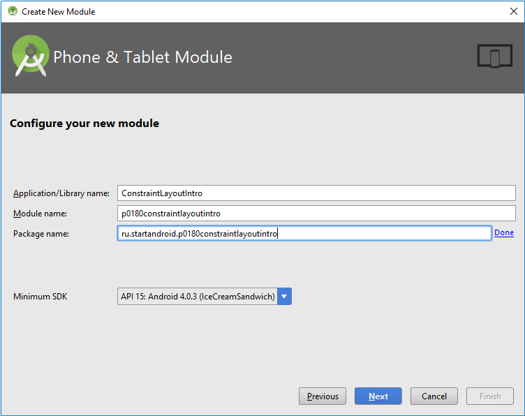
Application/Library name: ConstraintLayoutIntro
Module name: p0180constraintlayoutintro
Package name: ru.startandroid.p0180constraintlayoutintro
Итак, у нас в Android Studio есть модуль. А в нем есть файл res > layout > activity_main.xml.
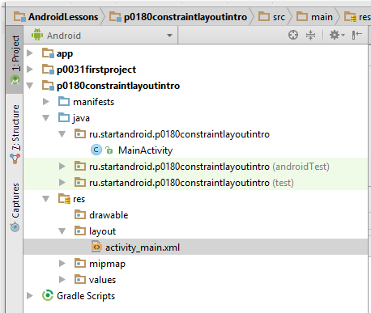
Откроем этот файл двойным кликом. Он выглядит так
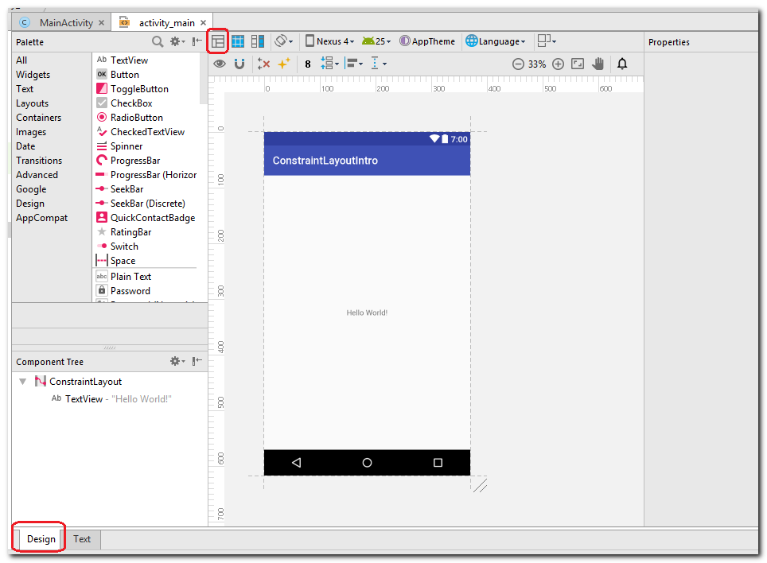
Убедитесь, что слева-внизу открытка вкладка Design, и режим просмотра выбран Design, а не Blueprint.
Сейчас на экране вы видите текст Hello World. Этот текст отображен с помощью View, которое называется TextView.
Вы можете видеть его в Component Tree (слева-снизу).
![]()
Обратите внимание, что TextView как бы вложен в ConstraintLayout. Это то, о чем я говорил в начале. ConstraintLayout - контейнер, а внутри него находятся различные View, в нашем случае - TextView. Также, можно сказать, что ConstraintLayout является родителем или родительским ViewGroup для TextView.
Давайте удалим TextView с экрана. Для этого просто выделите его на экране или в Component Tree и нажмите кнопку Del на клавиатуре.
Теперь ConstraintLayout пуст и экран ничего не отображает.
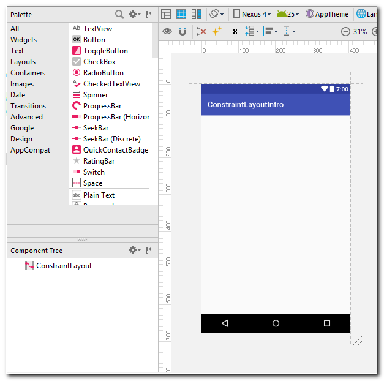
Если вы вдруг что-то удалили по ошибке, вы всегда можете восстановить это, нажав Ctrl+Z.
А если вы там совсем чего-то наворотили и не получается все это отменить, то откройте вкладку Text (слева-снизу) и вставьте туда этот код:
<?xml version="1.0" encoding="utf-8"?>
<android.support.constraint.ConstraintLayout xmlns:android="http://schemas.android.com/apk/res/android"
xmlns:app="http://schemas.android.com/apk/res-auto"
android:layout_width="match_parent"
android:layout_height="match_parent">
<TextView
android:layout_width="wrap_content"
android:layout_height="wrap_content"
android:text="Hello World!"
app:layout_constraintBottom_toBottomOf="parent"
app:layout_constraintLeft_toLeftOf="parent"
app:layout_constraintRight_toRightOf="parent"
app:layout_constraintTop_toTopOf="parent" />
</android.support.constraint.ConstraintLayout>Ваш экран вернется к первоначальному состоянию.
Зачем нужны привязки
Давайте добавим на экран какой-нибудь компонент, например, снова TextView. Для этого просто перетащите компонент мышкой из Palette на экран.
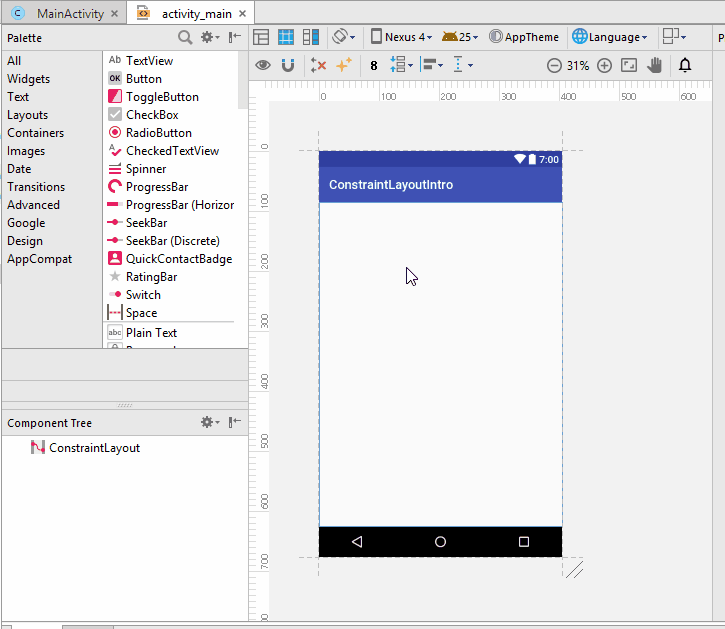
После этого TextView появился на экране и в Component Tree.
Запустим приложение и посмотрим, как этот текст будет выглядеть.
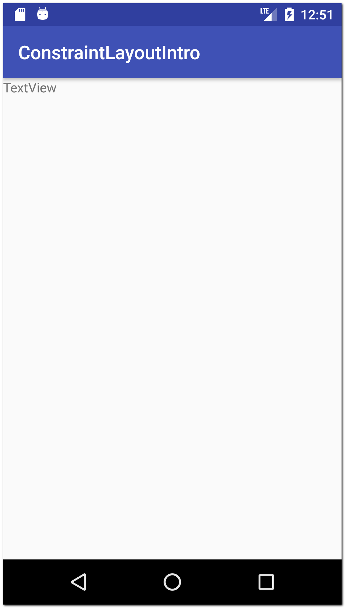
Видим, что TextView уехал влево и вверх. Что-то явно пошло не так.
Если вы откроете текстовое представление вашего экрана (вкладка Text слева-снизу), то увидите, что элемент TextView подчеркнут красной линией.
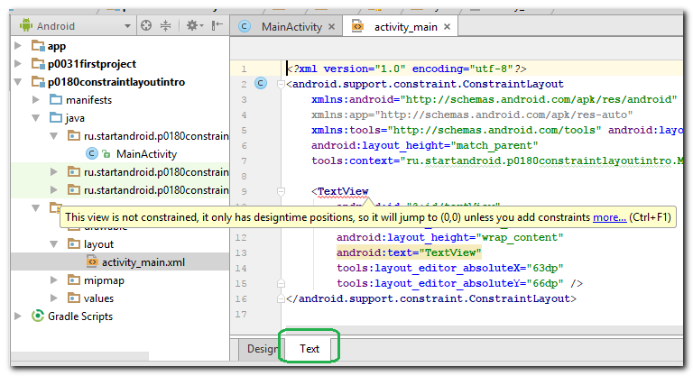
Если навести на него мышкой, то он покажет ошибку:
This view is not constrained, it only has designtime positions, so it will jump to (0,0) unless you add constraints.
Этим сообщением студия говорит нам, что View не привязано. Его текущее положение на экране актуально только для разработки (т.е. только в студии). А при работе приложения, это положение будет проигнорировано, и View уедет в точку (0,0), т.е. влево-вверх (что мы и наблюдали при запуске).
Как сделать так, чтобы View в ConstraintLayout оставалось на месте и не смещалось в угол? Необходимо добавить привязки (constraints). Они будут задавать положение View на экране относительно каких-либо других элементов или относительно родительского View.
Как добавить привязки
Давайте добавим привязки для нашего TextView.
Если вы выделите на экране TextView, то можете видеть 4 круга по его бокам.![]()
Эти круги используются, чтобы создавать привязки.
Существует два типа привязок: одни задают положение View по горизонтали, а другие - по вертикали.
Создадим горизонтальную привязку. Привяжем положение TextView к левому краю его родителя. Напомню, что родителем TextView является ConstraintLayout, который в нашем случае занимает весь экран. Поэтому края ConstraintLayout совпадают с краями экрана.
Чтобы создать привязку, нажмите мышкой на TextView, чтобы выделить его. Затем зажмите левой кнопкой мыши левый кружок и тащите его к левой границе.
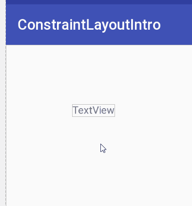
TextView также уехал влево. Он привязался к левой границе своего родителя.
Но вовсе необязательно они должны быть вплотную. Мы можем задать отступ. Для этого просто зажмите левой кнопкой мыши TextView, перетащите вправо и отпустите.
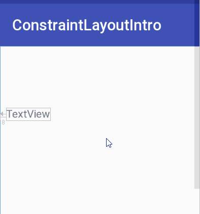
Обратите внимание на число, которое меняется. Это величина отступа TextView от объекта, к которому он привязан (в нашем случае - от левой границы родителя).
Запустим приложение
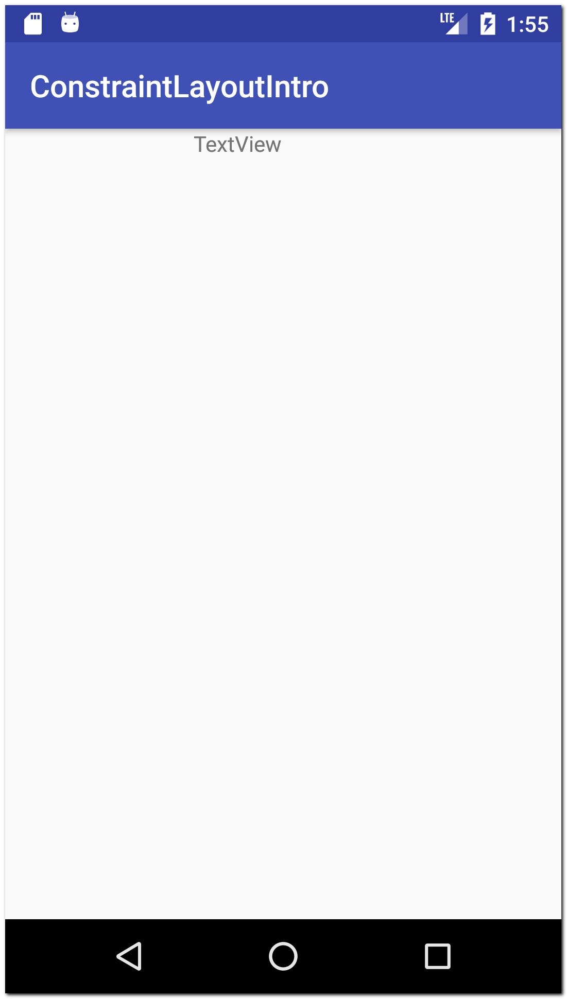
Раньше у нас TextView уезжал влево-вверх, а теперь он уехал только вверх. Влево он не уехал, т.к. мы создали для него горизонтальную привязку. И TextView теперь знает, что по горизонтали он должен располагаться с определенным отступом от левого края.
Давайте создадим вертикальную привязку, чтобы закрепить TextView и по вертикали.
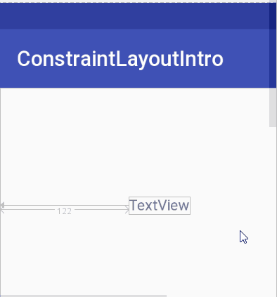
Используем верхний кружок и тащим его к верхней границе. TextView привязывается по вертикали к верхней границе родителя. После этого можно перетащить TextView куда вам нужно, чтобы настроить горизонтальный и вертикальный отступы. При перетаскивании вы видите значения отступов.
Теперь TextView привязан и по горизонтали, и по вертикали. Т.е. он точно знает, где он должен находиться на экране во время работы приложения.
Запускаем, чтобы проверить
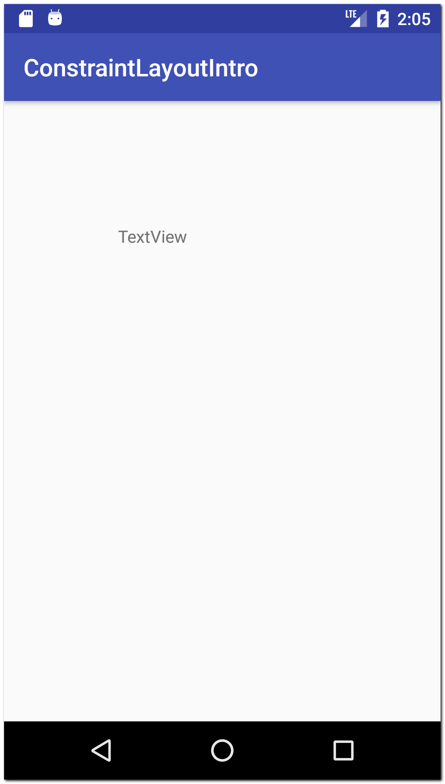
TextView никуда не уехал, а находится там, где мы и настроили с помощью привязок.
Давайте добавим еще одно View, например, кнопку - Button.
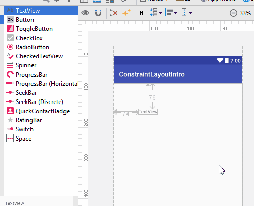
Если сейчас запустить приложение, то кнопка уедет влево-вверх потому что она ни к чему не привязана.
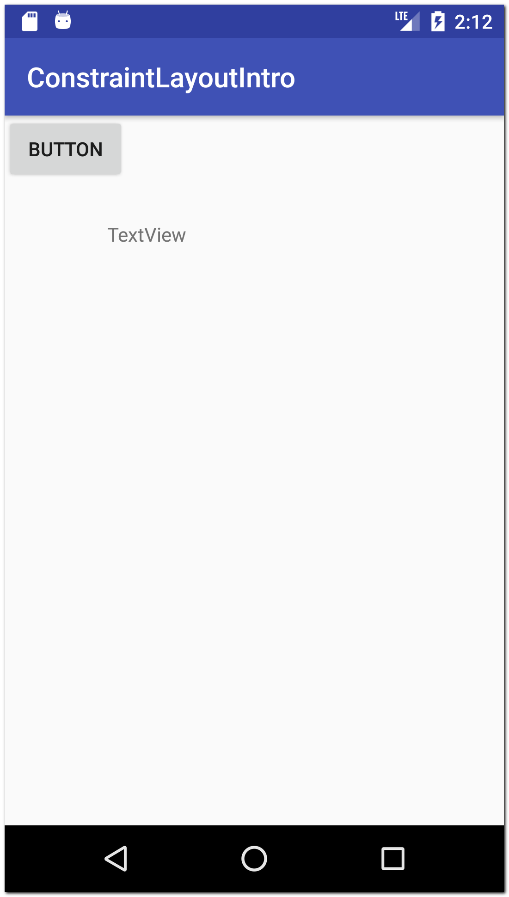
Мы можем привязывать не только к границам родителя, но и к другим View. Давайте привяжем кнопку к TextView.
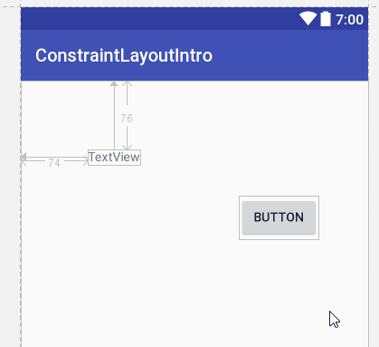
Мы привязали кнопку к TextView, создав две привязки
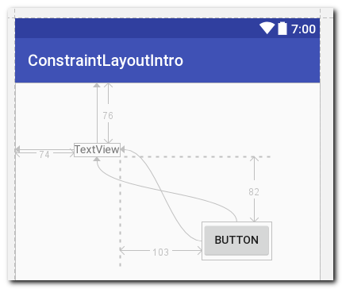
1) Вертикальная привязка. Верхняя граница кнопки привязана к нижней границе TextView. Отступ = 82.
Т.е. можно сказать, что по вертикальной оси:
верхняя граница кнопки = нижняя граница TextView + 82
2) Горизонтальная привязка. Левая граница кнопки привязана к правой границе TextView. Отступ 103.
По горизонтальной оси:
левая граница кнопки = правая граница TextView + 103
Т.к. кнопка привязана к TextView, то, если мы сейчас будем перемещать TextView, то кнопка будет также перемещаться.
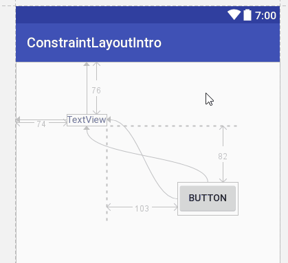
Добавим еще View. Например, CheckBox.

Давайте сделаем так, чтобы он по горизонтали находился на том же уровне, что и TextView. Для этого нам надо левую границу CheckBox привязать к левой границе TextView и сделать нулевой отступ. А по вертикали привяжем к нижней границе родителя.
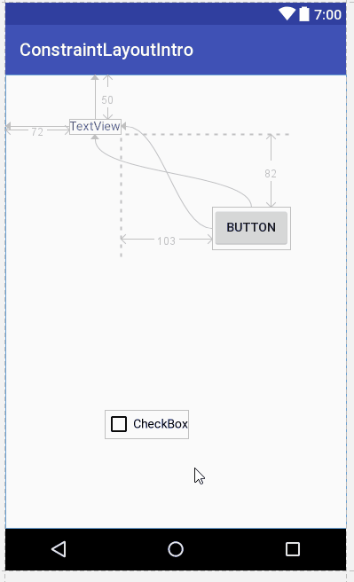
Теперь чекбокс и TextView выравнены по левому краю.
Как удалить привязку
Чтобы удалить привязку, надо просто нажать на соответствующий кружок. Удалим привязки у кнопки.
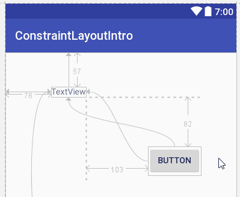
Чтобы удалить сразу все привязки, есть специальная кнопка
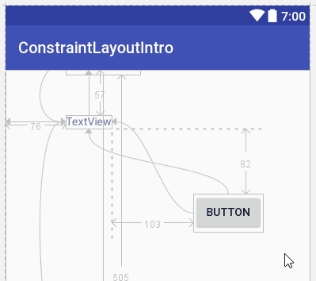
Привязка с двух сторон
Мы рассмотрели примеры, когда View было привязано по каждой оси только с одной стороны. Т.е. только слева или справа по горизонтали, и сверху или снизу по вертикали. Но мы можем привязать View с обоих сторон по каждой оси.
Пока рассмотрим только горизонтальную привязку. Но, разумеется, все это будет работать и для вертикальной привязки.
Давайте попробуем, например, левый край привязать к левой границе родителя, а правый край - к правой границе родителя.
Очистим экран от всех View и добавим новый TextView без каких-либо привязок. Теперь привяжем его к левой и правой границам родителя.
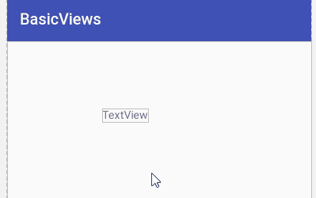
TextView сначала ушел влево, т.к. была привязка к левой границе, но после создания привязки к правой границе он выровнялся и теперь расположен по центру. Т.е. привязки уравняли друг друга, и View находится ровно посередине между тем, к чему он привязан слева, и тем, к чему он привязан справа. Т.е. в нашем случае View находится посередине между левой и правой границами его родителя.
Обратите внимание, что такие двусторонние привязки отображаются как пружинки, а не линии.
Давайте немного усложним пример, добавив кнопку и перенастроив привязки
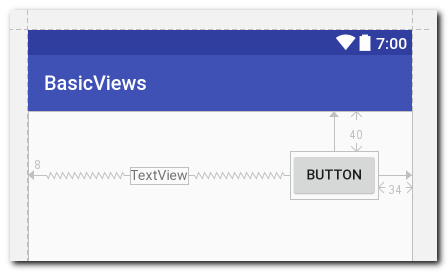
Кнопка привязана к правому краю. А TextView привязан к левому краю и к кнопке.
Если мы теперь будем перемещать кнопку, то TextView будет оставаться ровно посередине между левым краем и кнопкой.
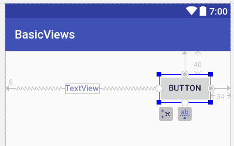
Мы можем настроить двустороннюю привязку так, чтобы View располагалось не посередине, а ближе к левому краю или к кнопке. Для этого удобно использовать специальный скролл в Properties.

Этим скроллом вы задаете пропорцию. По умолчанию значение = 50. Это половина от 100. Соответственно, View находится на половине расстояния между объектами, к которому оно привязано. В нашем случае, при значении = 50, TextView находится посередине между левым краем и кнопкой.
Если поставить значение, например, 25, то TextView будет находится от левого края на расстоянии равном четверти расстояния между левым краем и кнопкой. Если поставить 75, то TextView будет находится от левого края на расстоянии равном 3/4 от расстояния между левым краем и кнопкой.
И как бы не менялось расстояние между левым краем и кнопкой, эти пропорции всегда будут соблюдаться.